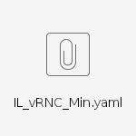
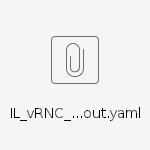

027_How to modify yaml file and scale out one USPU
Step by step guide:
Prepare relevant link:
Description: collect all relevant link before start- dashboard link: http://10.70.48.145/project/stacks/
- select image link: http://10.56.118.71/CloudIL/vrnc/ci/
Install one base stack
Description: install one stack,the cale out stack will base this stack.
Modify yaml file for scale out
Description: Modify the yaml file for scale out one USPU. The yaml file need modify parameter and resource.install stack with scale out yaml file.
- login dashboard and add stack with scale out yaml file

- login dashboard and add stack with scale out yaml file
Check scale out stack successful
- In the stack view, the new stack has been added.
- In the stack view, the new stack has been added.


Both the base yaml file and template of scale yaml file in the attachment.
